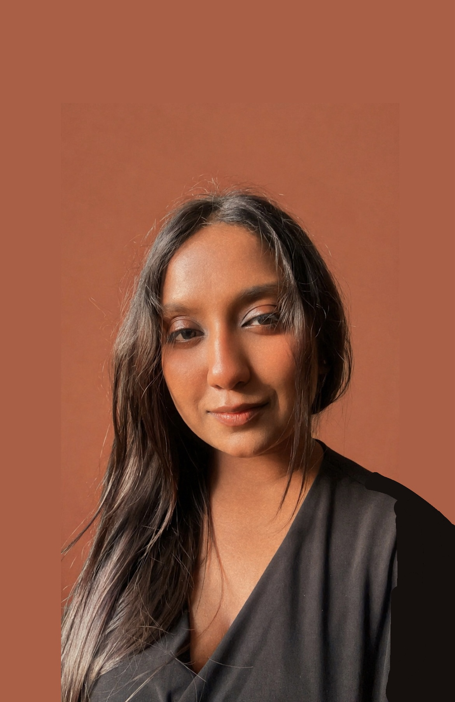

Let's talk.
Roles, collaborations, mentorship, or just a good conversation about systems and research. All welcome.

I design systems that hold up under real-world constraint.
I'm a product designer, currently based in Delhi, open to relocation anywhere. I grew up in Lucknow, studied Visual Arts at the University of Lucknow, and moved into product design because the field rewards the two things I care about most: thinking carefully, and listening hard.
A short walkthrough
A short overview of how I think about design and the work on this site.
The case studies on this site lean heavily on state machines, edge cases, and data models, because in systems-heavy products, those are the design. A ledger with eight transaction states isn't an interaction problem; it's a structural one. Screens follow from structure, not the other way around. My favourite design tool is Whimsical, not Figma.
The two case studies here look different on the surface. One is a fintech ledger system, the other an AI advisory app for smallholder farmers. They solve the same design problem: how to build systems for real constraint.
In fintech, constraint is precision. Every state label, every transaction record, every audit trail carries compliance and financial consequence. The screens follow from the data model; the UX follows from the systems thinking.
In farming, constraint is access. Users had low digital literacy, no shared language with the design team, limited bandwidth, and only voice as a reliable input. The interface had to be voice-first; the interactions had to be research-informed and resilient to failure.
Different domains, same principle: when you build for any real constraint, whether regulatory, technical, or human, the design thinking is identical. Precision, humility, systems first and screens second. That is why the work travels across fintech, social impact, consumer, and B2B SaaS. The constraint changes; the approach does not.
In my research, I've spent two years doing mixed-methods work with users in constraint: smallholder farmers across India and East Africa, first-time smartphone users, low-literacy populations. Moderated interviews, contextual inquiry, prototype testing in five languages, longitudinal analysis. The work taught me that the gap between what users say and what users do is the entire job. Self-reported preferences are not data. Observed behaviour is.
I've shipped AI products: Farmer.Chat, AI-personas for content recall, conversational onboarding for Vistaar. I also use AI tools daily for research synthesis, draft writing, and rapid ideation. I'm clear-eyed about what genuinely accelerates good work and what is speed-without-substance. AI is bad at deciding what matters, and good at executing once that decision is made.
Design: Figma, FigJam, Whimsical (for state machines and data models), Adobe XD, Sketch.
Research: Notion (synthesis), Dovetail when budget allows, Maze for unmoderated, Loom for async readouts, Otter for transcription.
AI in practice: Claude (synthesis, writing, structuring research), ChatGPT, Perplexity, Notion AI. I treat AI as a junior collaborator: useful for drafting, dangerous for deciding.
Collaboration: Linear, Jira, Slack, Loom. I prefer async-by-default for decisions that need a paper trail.
I read more than I should and write more than I admit to. I keep a long-running Notion of papers, essays, and field notes. Most of what ends up in case studies starts there.
I'm easy to reach if you want to talk about behavioural design, Indian fintech regulation, or how to design for a user who can't read your UI.
Roles, collaborations, mentorship, or just a good conversation about systems and research. All welcome.